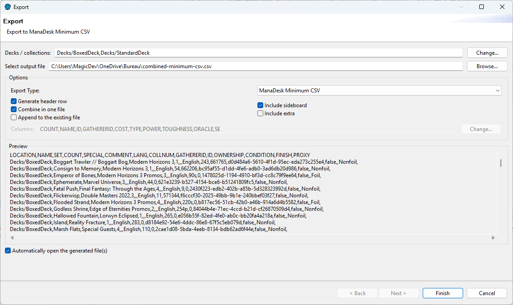
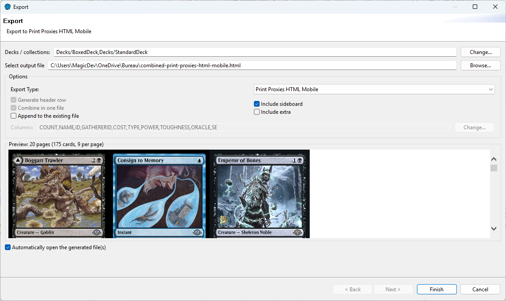
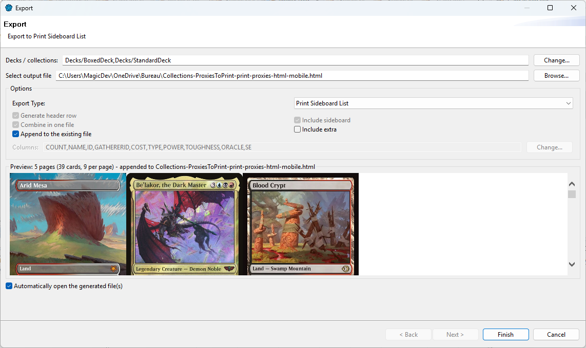

Export decks and collections to a file — to share them, to open them in a spreadsheet, to move them to another app, or to print proxies or a sideboard list.
Select the decks or collections in the Card Navigator (optional), then choose and Export Collection.

| Field | Meaning |
|---|---|
| Decks / collections | What to export; Change... to pick one or several. |
| Select output file | Where to save. The suggested name includes the deck and the format. |
| Export Type | The format (see below). |
| Generate header row | Write the column names on the first line. |
| Combine in one file | With several decks: one file (a Location column tells which deck each card comes from) instead of one file per deck. Always on for the printable formats. |
| Append to the existing file | If the file already exists, add this export to it instead of replacing it. Only into a file of the same kind: the same CSV header row (same format and columns), or a printable sheet (see Printable sheets). Otherwise ManaDesk says why and writes nothing. If the file doesn't exist yet, ManaDesk asks before creating it. Available only when everything goes into one file: Combine in one file checked, or a single deck. |
| Include sideboard / Include extra | Also export the deck's sideboard and extra list. |
| Columns | For formats that let you choose: Change... picks the columns and their order. |
| Preview | The start of the file, updated as you change the options. Printable formats (Print Proxies, Print Sideboard List) are shown as they will print, with the number of pages in the title. |
| Automatically open the generated file(s) | Open the file when it is written. |
The list shows ManaDesk's own formats first, then other applications' formats, then the formats you created yourself.
| Format | For |
|---|---|
| ManaDesk Full CSV (and Semicolon) | Everything about each card, for a spreadsheet or a full backup of a list. |
| ManaDesk Minimum CSV (and Semicolon) | Just what's needed to import the list back into ManaDesk (name, set, count, condition, finish, proxy...). |
| Print Proxies HTML Mobile | Card images to print as proxies, 9 per page (see below). |
| Print Sideboard List | A card-sized list of the deck's sideboard, to keep in the deck box (see below). |
| ManaBox CSV | To import the list into the ManaBox app (see ManaBox). |
| Your own formats | See Custom export formats. |
Use the Semicolon variants if your spreadsheet expects ; between columns (common outside
the United States).
Print Proxies and Print Sideboard List both make a printable sheet: pages of 9 card-sized slots (3 rows of 3), each 60 × 83.8 mm — a card's proportions, a little smaller than a real card (63 × 88 mm) so a printed proxy slides into a sleeve.
To print proxies of a deck or of your to-print collection, choose the Print Proxies HTML Mobile format: one card image per copy, in the slots of the printable sheet.

Don't want to memorize every deck's sideboard? Print it on a card you keep in the deck box.
Each list takes one card slot of the printable sheet, its text running sideways (turn the card to read it). It lists every sideboard card with its quantity, name, set, special tags and comment. With several decks, each deck gets its own card; with Append to the existing file, the lists can share the sheet with your proxies.

For a quick copy and paste, open the deck and click its Export tab: it shows the deck in the format you choose, ready to copy. See The Deck view.
See also: Custom export formats · Importing cards · Printing proxies